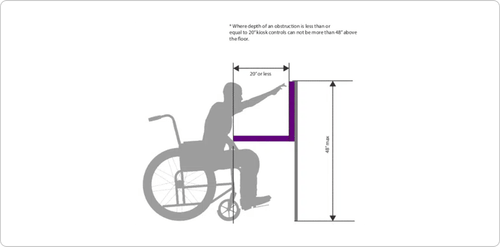
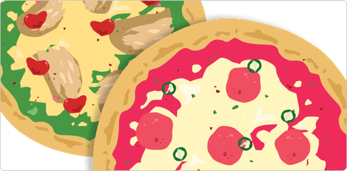
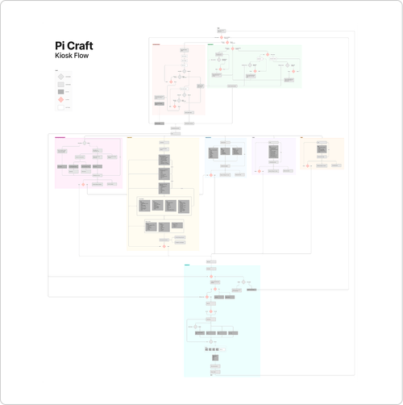
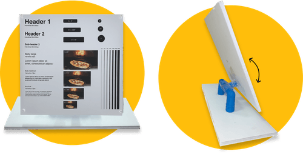
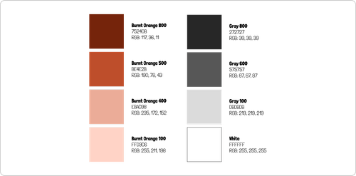
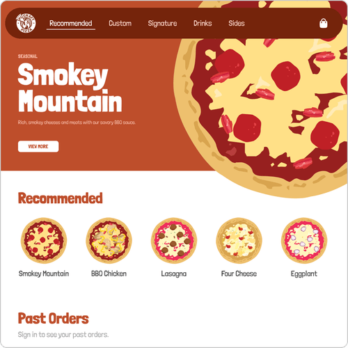
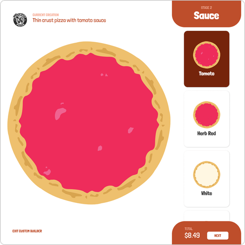
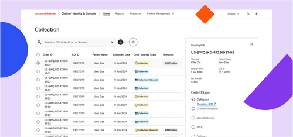

Pizza Shop Process Deck
What if ordering pizza felt like a nostalgic video game? A custom kiosk that lets customers build their perfect pizza, inspired by early 2000s cooking mini-games.
At A Glance
Problem
An unlabeled, crowded counter made building a pizza stressful, especially for kids who couldn't see over it.
What I Did
Designed a custom kiosk end to end: the hardware, the ordering flow, the illustrations and the visual style.
Impact
An accessible, no-pressure way for families and college students to order and customize.
The Problem
At Pi Craft, you build your own pizza at a long counter of dough, sauce, cheese and toppings. For its core customers, families and college students, that moment came with three problems.
Too many options, no labels
Nothing on the counter told you what you were looking at.
Pressure from the line
Deciding with people waiting behind you is stressful.
A counter too tall for kids
Little ones couldn't see the options they were choosing.
Two Key Decisions
A kiosk built for everyone
I designed a custom kiosk with a square screen shaped like a pizza box, plus a card reader, receipt printer and loyalty scanner. It sits at an ADA-compliant height on a ledge for personal items, and the screen tilts down so people of all heights can reach it.

A 2000s cooking-game look
To win over families and college students, I leaned into the playful energy of early 2000s cooking games. I hand-drew every dough, sauce, cheese and topping and paired them with Londrina Solid type to match Pi Craft's funky logo.

The Process
As a solo project, I took the kiosk from business analysis to high-fidelity screens:
- Workflow diagram: mapped how a kiosk fits Pi Craft's current order process
- Physical mockup: tested the tilt, height, and button and text sizes
- Style guide: burnt orange and gray palette, playful type, and 4- and 5-column grids



The Screens


The Outcome
Pi Craft now has an accessible second way to order and customize pizza. The playful look appeals to families and college students, and the live pizza preview takes the guesswork and pressure out of building one.
More Like This
